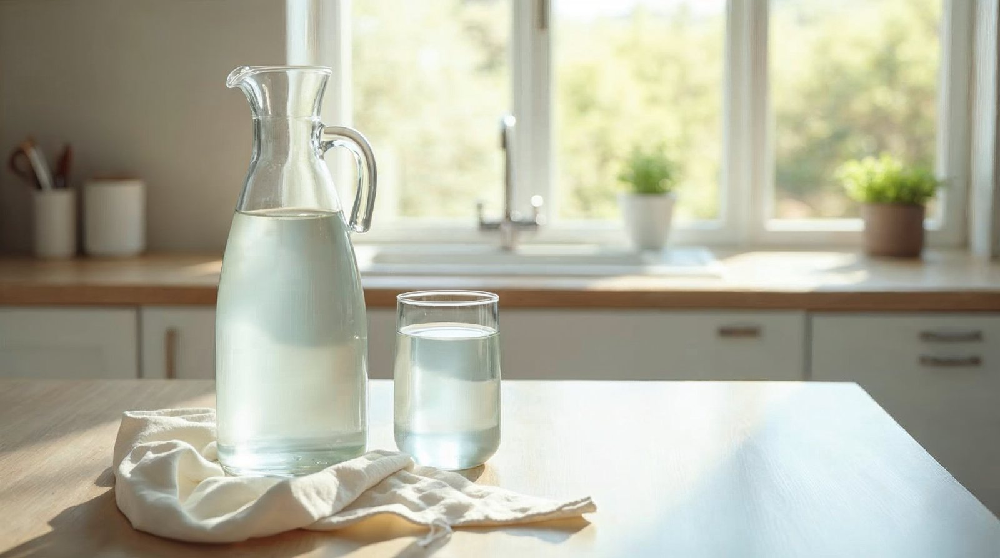
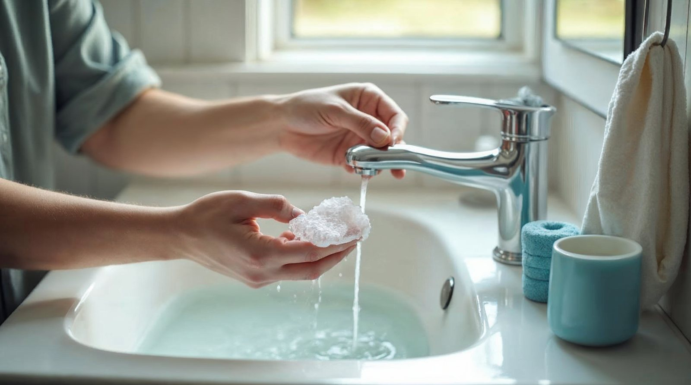

이종호 한의사 감수좋은꿈참사랑한의원 대표원장 (한의사 면허번호 19769)발행 2026-11-23 · 수정 2026-11-26
이 글의 차례
소변이 자주 마렵고 아랫배가 불편한 느낌이 반복된다면, 먼저 소변 검사로 염증 여부를 확인하는 것이 우선입니다. 검사에서 큰 이상이 없는데도 불편이 이어진다면 몸의 온기, 피로, 잠, 긴장 같은 생활 요소를 함께 살핍니다.
여성은 요도가 짧아 방광염이 비교적 잘 생기는 편이고, 자주 반복된다면 비뇨의학과에서 원인을 더 살펴보시길 권합니다. 반대로 검사를 여러 번 해도 세균이 나오지 않는데 불편이 이어진다면 과민성 방광이나 방광 통증처럼 다른 방향의 확인이 필요할 수도 있어, 검사 결과를 함께 놓고 차례를 정합니다.
왜 이런 불편이 생길 수 있나요
- 방광에 세균 감염이 생기면 소변이 자주 마렵고 볼 때 따끔하며 아랫배가 불편할 수 있어 검사가 먼저 필요합니다.
- 감염이 없는데도 방광이 예민해져 조금만 차도 소변이 마렵게 느껴지는 경우가 있습니다.
- 물을 적게 마시거나 소변을 오래 참는 습관, 카페인과 술은 방광을 더 예민하게 할 수 있습니다.
- 폐경 뒤에는 호르몬 변화로 요도와 질 주변 점막이 얇고 건조해져 소변 불편과 방광염이 되풀이되기 쉬운 경우가 있습니다.
- 성관계 뒤나 꽉 끼는 옷을 오래 입은 날 증상이 시작된다는 분도 있어 생활 습관을 함께 살핍니다.
- 피곤하거나 추운 날, 긴장하는 날 더 심해진다는 분이 많아 생활 리듬과 함께 살핍니다.
방광염과 비슷한 다른 불편은 어떻게 구분하나요?
소변이 자주 마렵고 아랫배가 불편하다고 해서 모두 방광염은 아닙니다. 소변 검사에서 세균이나 염증 세포가 보이고 항생제를 먹은 뒤 편해졌다면 방광염에 가깝지만, 검사가 깨끗한데 불편이 이어진다면 다른 가능성을 함께 생각합니다.
외음부가 가렵거나 냉이 늘고 냄새가 난다면 질염이 소변 불편처럼 느껴지는 경우가 있어 산부인과 확인이 필요합니다. 갑자기 참기 어려운 요의가 자주 오고 가끔 새기도 한다면 과민성 방광 쪽을 비뇨의학과에서 살펴볼 수 있습니다.
소변이 찰수록 아랫배 통증이 심해지고 보고 나면 덜해지는 흐름이 몇 달 이어진다면 방광 통증 증후군을 의심해 볼 수 있습니다. 옆구리가 쥐어짜듯 아프다가 소변 불편이 생겼다면 결석 확인이 먼저입니다.
물을 많이 마시지 않는데도 소변량이 많고 목이 자주 마르다면 혈당을 확인해 보시길 권합니다. 이렇게 검사로 가를 수 있는 부분을 먼저 확인한 뒤, 남는 불편을 생활과 몸의 리듬에서 함께 찾아갑니다.
왜 반복될수록 불편이 더 예민하게 느껴질까요?
방광염을 몇 번 겪고 나면 아랫배에 조금만 묵직한 느낌이 와도 또 시작되는 건 아닐까 걱정부터 앞섭니다. 이 걱정 때문에 화장실을 자주 찾게 되고, 방광이 덜 찬 상태에서 비우는 일이 반복되면 적은 양에도 요의를 느끼는 쪽으로 익숙해지기 쉽습니다.
여기에 긴장하면 골반 아래쪽 근육도 함께 굳습니다. 이 근육이 늘 조여 있으면 소변을 다 본 뒤에도 덜 본 것 같은 느낌이 남고, 회음부나 아랫배가 뻐근하다고 느끼는 분도 있습니다. 그래서 검사가 깨끗한데 불편이 이어질 때는 몸의 긴장과 잠, 피로를 함께 살핍니다.
먼저 이렇게 여쭙니다
- 소변 검사나 비뇨의학과 진료를 받아 보셨나요?
- 소변 볼 때 통증이나 피가 섞인 적이 있나요?
- 최근 1년 동안 항생제를 먹은 방광염이 몇 번 있었나요?
- 피곤하거나 추울 때 더 심해지나요?
- 물은 하루에 얼마나 드시나요?
- 밤에 소변 때문에 깨시나요?
- 폐경이 되었거나 임신 가능성이 있나요?
불편을 설명할 때는 아프다는 말만으로는 부족할 때가 많습니다. 따끔한지, 묵직한지, 화끈한지, 소변이 찰 때 아픈지 보고 나서 아픈지처럼 느낌과 때를 나눠 떠올려 보세요. 그 차이가 어느 쪽을 먼저 확인할지 정하는 데 실마리가 됩니다.

스스로 점검해 보세요
- 소변을 보고 나서도 덜 본 것 같은 느낌이 남는다
- 낮에 소변을 여덟 번 넘게 보거나 한두 시간을 참기 어렵다
- 물을 적게 마시거나 소변을 오래 참는 날이 많다
- 커피·녹차·탄산음료를 하루 두 잔 넘게 마신다
- 피곤하거나 추운 날, 긴장한 날 더 자주 마렵다
- 소변 검사에서 이상이 없다고 들었는데 불편이 이어진다
- 소변 볼 때 따끔하거나 화끈하다
앞의 여섯 가지가 주로 해당한다면 마시는 양과 시간, 배뇨 습관부터 함께 정리해 볼 수 있습니다. 마지막 항목에 해당한다면 감염일 수 있어 한의원보다 소변 검사를 먼저 받아 보세요.

일상에서 먼저 해 볼 수 있는 것
- 물을 하루에 나눠 충분히 마시기
- 소변을 오래 참지 않기
- 아랫배와 허리를 차지 않게 하기
- 카페인과 술 줄이기
- 잠들기 두 시간 전부터는 마시는 양을 조금 줄이기
화장실에서는 앞에서 뒤로 닦고, 성관계 뒤에는 소변을 한 번 보는 습관을 들여 보세요. 꽉 끼는 하의나 젖은 속옷을 오래 입지 않도록 하고, 앉아서 일하는 분은 두세 시간에 한 번은 일어나 화장실에 다녀오시길 권합니다.
검사에서 염증이 없다고 확인된 뒤에도 혹시 몰라 마렵지 않은데 자주 화장실에 가는 습관이 생겼다면, 간격을 조금씩 늘려 보는 것이 방광이 덜 예민해지는 데 도움이 될 수 있습니다.
하루 물과 화장실 습관은 어떻게 정리하면 좋을까요?
물은 한꺼번에 많이 마시기보다 아침, 오전, 점심, 오후, 저녁으로 나눠 한 컵씩 드시는 것이 방광에 덜 부담스럽습니다. 소변 색이 옅은 노란색 정도로 유지되면 마시는 양이 크게 모자라지 않다고 볼 수 있습니다.
커피와 녹차는 하루 한 잔 정도로 줄여 보고, 오후 늦게는 보리차나 미지근한 물로 바꿔 보세요. 탄산음료와 술, 맵고 짠 음식을 먹은 날 불편이 심했다면 기록에 표시해 두면 줄여 볼 것이 분명해집니다.
화장실은 마려울 때 미루지 말고 다녀오세요. 소변을 볼 때는 서두르지 말고 편하게 앉아 끝까지 비우는 것이 좋습니다. 급하게 힘을 주어 짜내는 습관은 아랫배 근육을 더 긴장시킬 수 있습니다.
밤에 화장실 때문에 자주 깬다면 저녁 식사 뒤 국물과 과일, 음료를 조금 줄이고 잠들기 전 한 번 다녀오세요. 밤에 화장실에 갈 때는 넘어지지 않도록 복도에 작은 불을 켜 두시길 권합니다.
몸을 따뜻하게 하고 긴장을 푸는 데는 무엇이 도움이 될까요?
추운 날이나 차가운 의자에 오래 앉은 날 불편이 심해진다는 분이 많습니다. 겨울에는 허리와 아랫배를 덮는 옷을 입고, 바닥이 차가운 곳에서는 방석을 깔아 보세요. 하체가 식지 않도록 발목까지 덮는 양말을 신는 것도 도움이 될 수 있습니다.
저녁에는 미지근한 물로 씻은 뒤 누워서 무릎을 세우고 배로 천천히 숨을 쉬어 보세요. 숨을 내쉴 때 아랫배와 엉덩이 근육이 같이 풀리는 느낌에 집중하면, 하루 동안 조여 있던 골반 아래쪽이 조금씩 느슨해지도록 도와 볼 수 있습니다.
잠이 부족하고 피곤한 주에 불편이 되풀이된다면 그 주의 일정부터 조금 덜어 내 보세요. 몸이 지쳐 있을 때는 작은 자극에도 방광이 더 예민하게 반응하기 쉽습니다. 일찍 자는 날을 일주일에 이틀이라도 만들어 보세요.
예를 들면 이런 경우입니다
- 예를 들어 근무 중 자리를 비우기 어려운 매장이나 병동 근무자라면, 일하는 동안 물과 소변을 얼마나 참는지와 퇴근 뒤 몰아서 마시는 습관을 함께 여쭙고 근무 형태에 맞는 물 마시는 시간을 정해 봅니다.
- 예를 들어 시험이나 발표를 앞두면 화장실에 자꾸 가고 싶어지는 학생이나 직장인이라면, 검사 결과를 먼저 확인한 뒤 긴장하는 상황과 잠, 카페인을 함께 살핍니다.
- 예를 들어 폐경 뒤 방광염이 잦아졌다는 어르신이라면, 비뇨의학과나 산부인과에서 소변 검사와 점막 상태를 확인하셨는지부터 여쭙고, 밤에 깨는 횟수도 함께 살핍니다.
- 예를 들어 운동을 시작한 뒤 땀을 많이 흘리고 물은 적게 마시는 분이라면, 운동 전후로 마시는 양과 운동복을 갈아입는 시간을 함께 여쭙고 젖은 옷을 오래 입지 않도록 순서를 정해 봅니다.
- 예를 들어 출산 뒤 소변이 자주 마렵고 기침할 때 조금씩 새는 분이라면, 출산 시기와 회복 과정을 함께 여쭙고 산부인과나 비뇨의학과에서 확인을 받으셨는지부터 살핍니다.
얼마나 지켜보고, 언제 상담할까요
- 처음 생긴 소변 불편이라면 지켜보지 말고 하루 이틀 안에 내과나 비뇨의학과에서 소변 검사를 받아 보세요.
- 항생제를 처방받았다면 증상이 덜해져도 정해진 기간을 지켜 복용하고, 약을 먹는 동안 2~3일이 지나도 나아지지 않거나 다 먹은 뒤에도 증상이 남으면 처방받은 곳에 다시 문의하세요.
- 6개월에 두 번 이상 또는 1년에 세 번 이상 반복된다면 비뇨의학과에서 추가 검사를 상의해 보시길 권합니다.
- 검사에서 이상이 없는데 2~3주 넘게 불편이 이어진다면 배뇨 기록을 가지고 상담을 받아 보세요.
한의원에서 함께 살필 수 있는 경우
- 검사에서 큰 이상이 없는데 불편이 반복되는 경우 몸의 온기와 피로, 잠을 함께 살핍니다.
- 긴장하면 소변이 자주 마려운 경우 긴장 정도와 생활 리듬을 함께 살핍니다.
- 밤에 소변으로 자주 깨는 경우 잠과 수분 섭취 시각을 함께 살핍니다.
좋은꿈참사랑한의원에서는 모든 분께 그렇듯 맥부터 짚으며 증상이 반복된 횟수와 검사·항생제 복용 이력, 마시는 물과 커피의 양, 밤에 깨는 횟수를 충분히 여쭙고, 누워서 아랫배와 허리의 온기와 긴장을 살핍니다. 그다음 침, 온열 치료, 한약 상담 가운데 상태에 맞는 방법을 정하고, 이틀 정도 적어 볼 배뇨 기록도 함께 정합니다.
대표원장은 '잘 먹고, 잘 싸고, 잘 자고, 마음 편하고, 몸 따뜻하게'를 몸이 회복하는 바탕으로 꼽습니다. 되풀이되는 소변 불편은 그 가운데 '잘 싸고'와 '몸 따뜻하게'에 함께 걸쳐 있는 일이라, 방광만 따로 떼어 보지 않으려 합니다. 검사 결과지가 있다면 함께 보고, 염증 신호가 남아 있거나 아직 검사를 받지 않았다면 의과 진료를 먼저 안내합니다.
한약은 몸 상태를 살핀 뒤 필요하다고 판단될 때 상담하며, 방광염이 다시 생기지 않는다고 단정하지 않습니다. 임신 가능성이 있거나 항생제·호르몬제·혈압약 등을 드시고 있다면 상담 전에 먼저 알려 주세요. 비용이나 보험 적용은 방문 전 전화로 확인해 주세요.
이렇게 기록해 오시면 상담이 쉬워집니다
- 하루 소변 횟수와 밤에 깬 횟수(이틀 정도)
- 마신 물과 커피·차의 양
- 증상이 심했던 날의 상황(피로, 추위, 긴장)
- 최근 1년 동안 방광염으로 항생제를 먹은 횟수와 시기
- 소변 검사·비뇨의학과 진료 결과지
배뇨 기록은 일어나서 잠들 때까지 화장실에 간 시각에 바를 정 자를 하나씩 쓰는 방식이면 충분합니다. 마신 음료는 컵 단위로 옆에 적어 두세요. 이틀만 적어도 마시는 시간과 화장실에 가는 시간이 어떻게 이어지는지 보입니다.
불편이 심했던 날에는 그날 오래 앉아 있었는지, 춥게 지냈는지, 잠을 설쳤는지 한 줄만 덧붙여 주세요. 생리 기간과 겹쳤는지도 함께 적어 두면 좋습니다. 반복되는 상황을 찾는 데 큰 도움이 됩니다.
화장실 위치부터 확인하며 하루를 보내셨을 그 번거로움을 생각하게 됩니다. 다음에 오시면 이틀 동안 적어 오신 배뇨 기록과 불편이 심했던 날의 상황부터 함께 보겠습니다.
이런 증상은 먼저 확인이 필요합니다
- 열이나 오한, 옆구리·등 통증이 있거나 소변 볼 때 통증이 심한 경우
- 소변에 피가 섞이거나 소변이 거의 나오지 않는 경우, 임신 중에 소변 불편이 생긴 경우
이런 신호가 있으면 한의원보다 가까운 병원이나 응급실을 먼저 찾으세요.
함께 읽으면 좋은 글
- 자다가 소변 때문에 깨면 잠과 어떤 관련이 있고, 무엇을 살펴보나요?
- 방광염이 자꾸 재발할 때는 무엇을 확인하고, 재발 사이의 몸은 어떻게 살피나요?
- 허리가 아파서 왔는데 대변과 소변은 왜 묻나요?

여쭙는 것
- 소변 검사나 비뇨의학과 진료를 받아 보셨나요?
- 소변 볼 때 통증이나 피가 섞인 적이 있나요?
- 최근 1년 동안 항생제를 먹은 방광염이 몇 번 있었나요?
생활에서 해 볼 것
- 물을 하루에 나눠 충분히 마시기
- 소변을 오래 참지 않기
- 아랫배와 허리를 차지 않게 하기
한의원에서 함께 살필 것
- 검사에서 큰 이상이 없는데 불편이 반복되는 경우 몸의 온기와 피로, 잠을 함께 살핍…
- 긴장하면 소변이 자주 마려운 경우 긴장 정도와 생활 리듬을 함께 살핍니다.
- 밤에 소변으로 자주 깨는 경우 잠과 수분 섭취 시각을 함께 살핍니다.
먼저 확인이 필요한 신호
- 열이나 오한, 옆구리·등 통증이 있거나 소변 볼 때 통증이 심한 경우
- 소변에 피가 섞이거나 소변이 거의 나오지 않는 경우, 임신 중에 소변 불편이 생긴 경우
한눈에 보는 표
| 구분 | 핵심 |
|---|---|
| 여쭙는 것 | 소변 검사나 비뇨의학과 진료를 받아 보셨나요? 소변 볼 때 통증이나 피가 섞인 적이 있나요? |
| 생활에서 해 볼 것 | 물을 하루에 나눠 충분히 마시기 소변을 오래 참지 않기 |
| 한의원에서 함께 살필 것 | 검사에서 큰 이상이 없는데 불편이 반복되는 경우 몸의 온기와 피로, 잠을 함께 살핍니다. 긴장하면 소변이 자주 마려운 경우 긴장 정도와 생활 리듬을 함께 살핍니다. |
| 먼저 확인이 필요한 신호 | 열이나 오한, 옆구리·등 통증이 있거나 소변 볼 때 통증이 심한 경우 소변에 피가 섞이거나 소변이 거의 나오지 않는 경우, 임신 중에 소변 불편이 생긴 경우 |
자주 묻는 질문
방광염 같으면 한의원부터 가도 되나요?
소변 불편이 처음 생겼거나 다시 시작됐다면 먼저 소변 검사로 염증 여부를 확인하시길 권합니다. 검사에서 큰 이상이 없는데 불편이 이어질 때 함께 살펴볼 수 있습니다.
검사 결과지를 가져가야 하나요?
있으면 가져오시면 함께 참고합니다.
물을 많이 마시면 더 자주 가게 되지 않나요?
한꺼번에 많이 마시기보다 하루에 나눠 마시는 것이 좋습니다. 마시는 양과 시간을 기록해 함께 조정합니다.
크랜베리 같은 건강식품을 먹어도 되나요?
드시는 건강식품과 영양제는 상담 때 알려 주세요. 복용 중인 약과 함께 살펴보고, 건강식품이 검사와 치료를 대신하지 않도록 안내합니다.
좋은꿈참사랑한의원은 재진 때 지난번 이야기부터 이어서 여쭙니다. 진료시간과 예약은 오시는 길에서 확인하세요.
어디서 상담받을 수 있나요?
좋은꿈참사랑한의원은 서울 동작구 만양로2길 2 신성빌딩 3층·5층(서울 동작구 상도동, 7호선 상도역 3번 출구 근처)에 있습니다. 한의사 3명(이종호 대표원장, 조영기 수석진료원장, 정원영 진료원장)이 진료합니다. 진료시간은 평일 09:30~20:00(점심 13:00~14:00), 토·일·공휴일 09:30~15:00이며, 방문 전 전화로 확인을 권합니다. 예약은 네이버 예약, 카카오톡 상담, 전화 02-815-7510로 받습니다.
이 글은 일반적인 건강 정보이며 개인의 진단이나 치료를 대신하지 않습니다. 증상이 있거나 복용 중인 약이 있다면 진료를 통해 확인하세요. 치료 효과는 개인마다 다를 수 있습니다.
작성 기준: 일반적으로 알려져 있는 건강 정보를 참고해 정리했습니다(대표원장 감수). 증상 기록은 1~2주 동안 하루 1회, 비슷한 시간에 적어 오시면 지난 상태와 비교하기 쉽습니다.